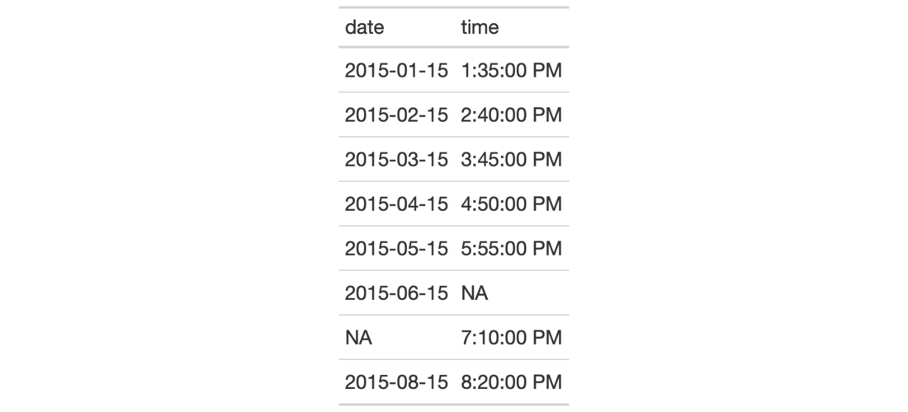
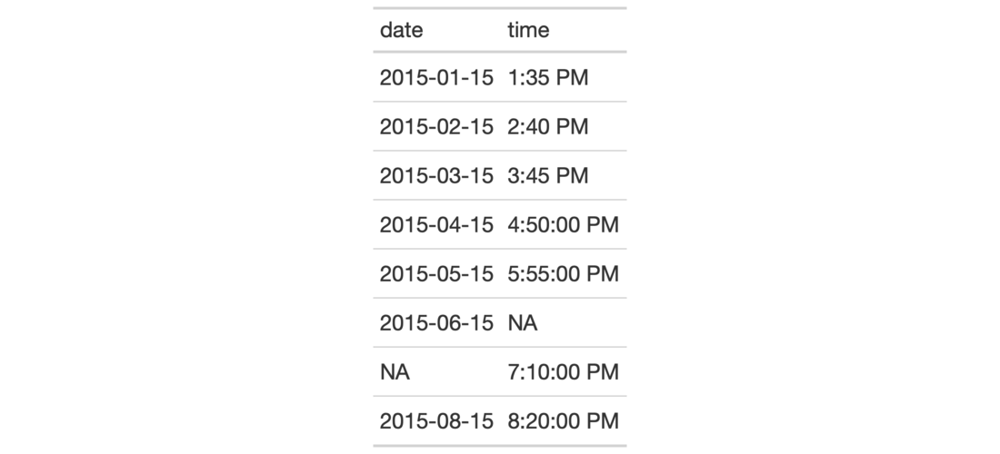

Format input time values that are character-based and expressed according to
the ISO 8601 time format (HH:MM:SS). Once the appropriate data cells are
targeted with columns (and, optionally, rows), we can simply apply a
preset time style to format the times. The following time styles are
available for simpler formatting of ISO times (all using the input time of
14:35:00 in the example output times):
"hms": 14:35:00
"hm": 14:35
"hms_p": 2:35:00 PM
"hm_p": 2:35 PM
"h_p": 2 PM
We can use the info_time_style() function for a useful reference on all of
the possible inputs to time_style.
fmt_time(data, columns, rows = everything(), time_style = 2)
| data | A table object that is created using the |
|---|---|
| columns | The columns to format. Can either be a series of column names
provided in |
| rows | Optional rows to format. Providing either |
| time_style | The time style to use. Supply a number (from |
An object of class gt_tbl.
Targeting of values is done through columns and additionally by rows (if
nothing is provided for rows then entire columns are selected). Conditional
formatting is possible by providing a conditional expression to the rows
argument. See the Arguments section for more information on this.


3-7
Other Format Data:
data_color(),
fmt_bytes(),
fmt_currency(),
fmt_datetime(),
fmt_date(),
fmt_markdown(),
fmt_missing(),
fmt_number(),
fmt_passthrough(),
fmt_percent(),
fmt_scientific(),
fmt(),
text_transform()
# Use `exibble` to create a gt table; # keep only the `date` and `time` columns; # format the `time` column to have # times formatted as `hms_p` # (time style `3`) tab_1 <- exibble %>% dplyr::select(date, time) %>% gt() %>% fmt_time( columns = time, time_style = 3 ) # Use `exibble` to create a gt table; # keep only the `date` and `time` columns; # format the `time` column to have mixed # time formats (times after 16:00 will # be different than the others) tab_2 <- exibble %>% dplyr::select(date, time) %>% gt() %>% fmt_time( columns = time, rows = time > "16:00", time_style = 3 ) %>% fmt_time( columns = time, rows = time <= "16:00", time_style = 4 )